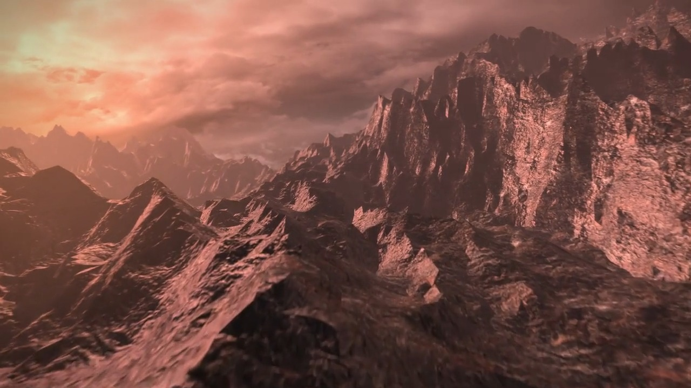
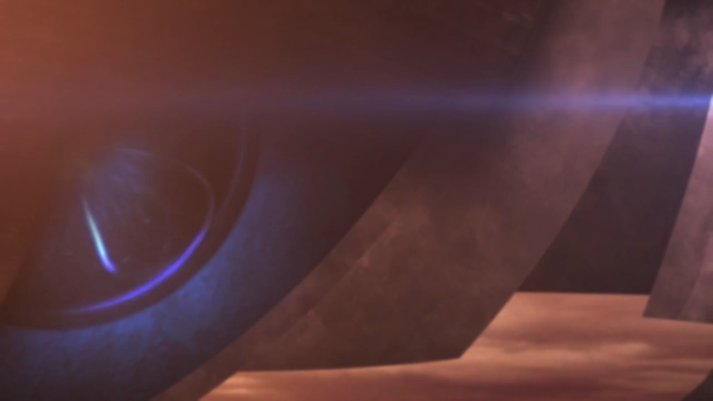
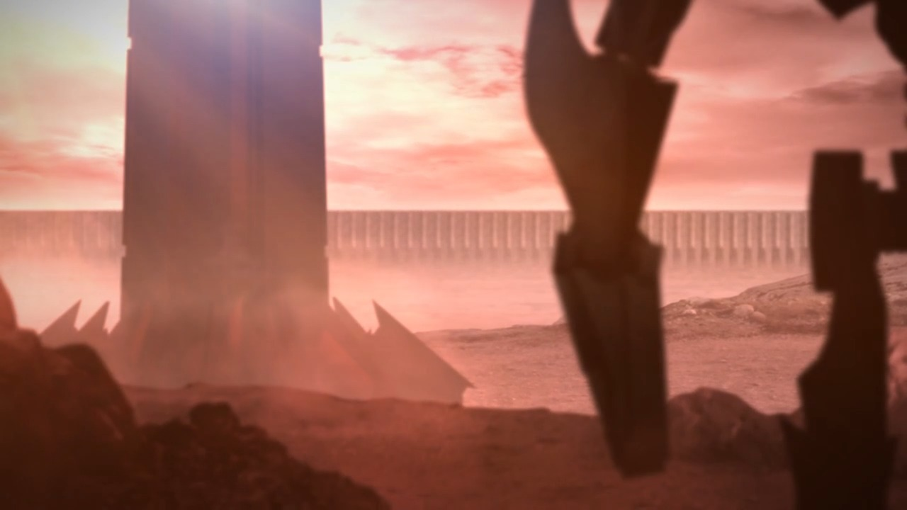
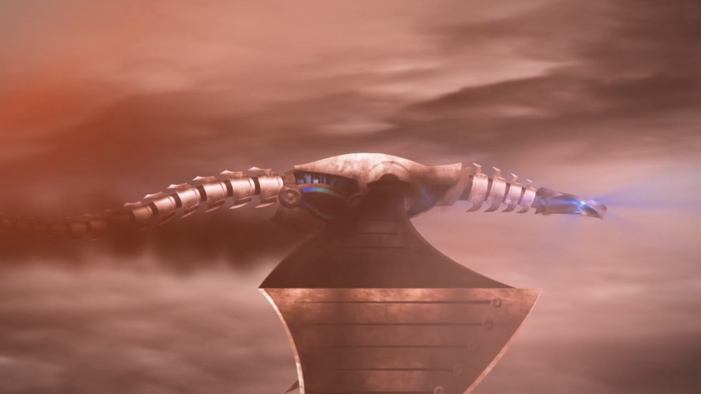
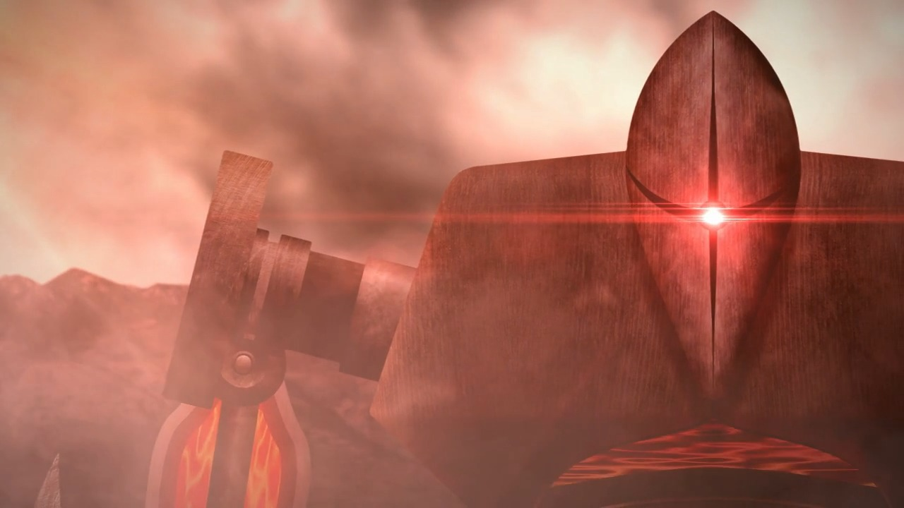
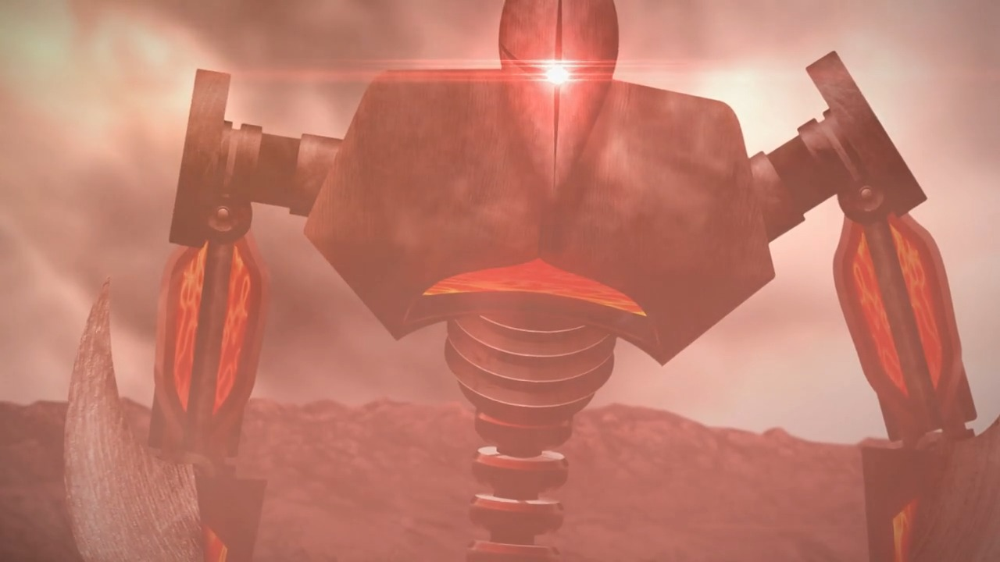
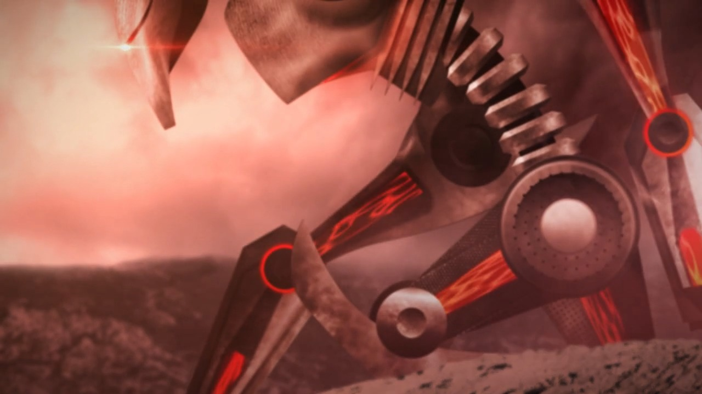
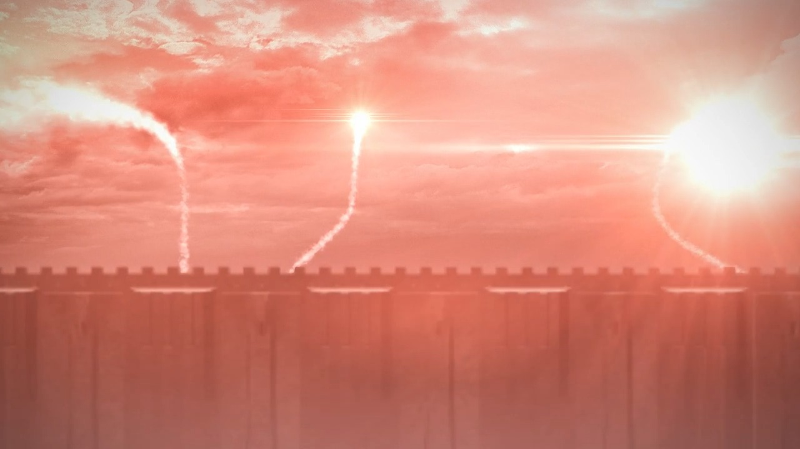
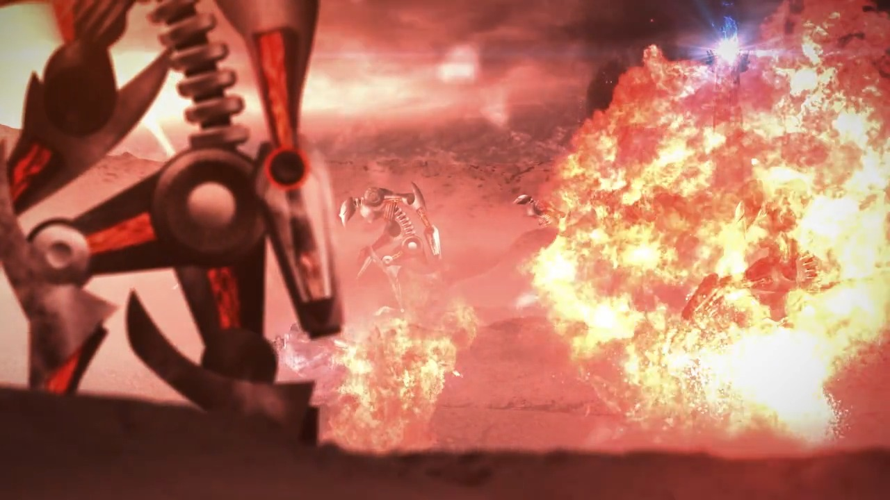
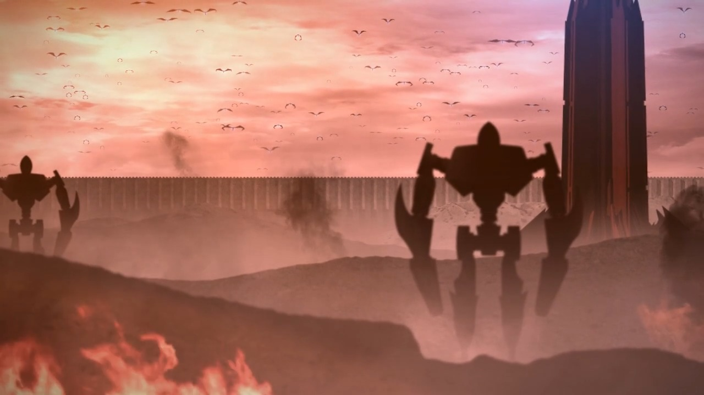

Interceptor vs Pedestrian (2013)
A fan-made sci-fi battle, inspired by The Lord of the Rings, Battlestar Galactica and Star Wars. Animation and character design by me.












01
About the film
Made with Illustrator, Photoshop, Cinema 4D, After Effects and Premiere Pro, covering character design, 3D animation and visual effects.
Soundtrack: “A Watchful Guardian” by Hans Zimmer and James Newton Howard, performed by the London Symphony Orchestra. I don’t own the rights to the music; this is a non-commercial fan film.